Patterns for Model Structure
Daniel Vartanian
University of São Paulo
August 13, 2025
Hi there! 👋
In this presentation, I will provide an overview on Pattern-Oriented Modeling—an approach for designing structurally realistic models.
We’ll explore the following topics:
- Introduction
- Pattern-Oriented Modeling
- How to Start
- Example
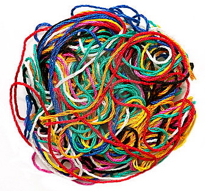
Introduction
Part III & Chapter 18
Part II was focused on specific parts of a model or its computer implementation.
Part III is more strategic and thus addresses full ABMs.
Chapter 18: First task of pattern-oriented modeling ― Using observed patterns to design a model structure that includes enough to make the model sufficiently realistic and testable but not unnecessarily complex.
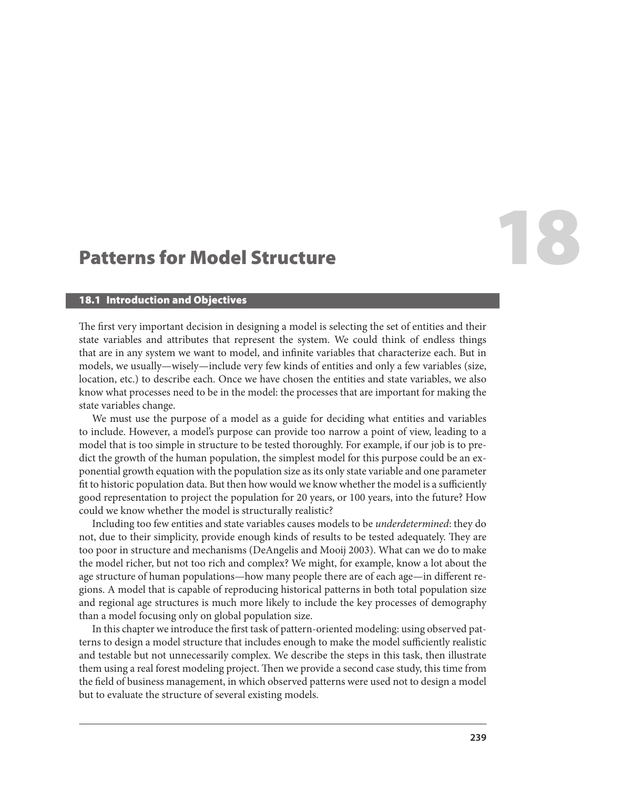
What Is a Model?
A model is a simplified representation of a system. It can be conceptual, verbal, diagrammatic, physical, or formal (mathematical) (Sayama, 2015).
A good model is simple, valid, and robust (Sayama, 2015).
All models are wrong, but some are useful (Box, 1979, p. 202).
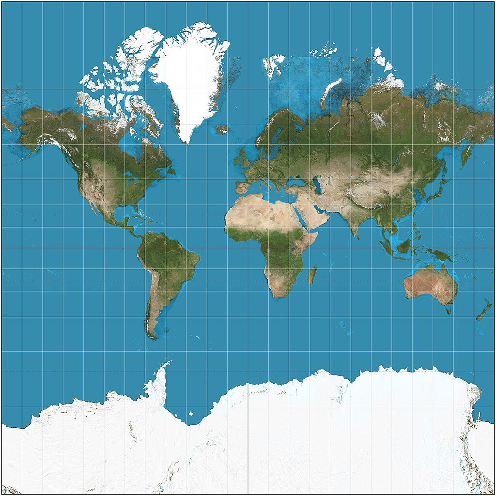
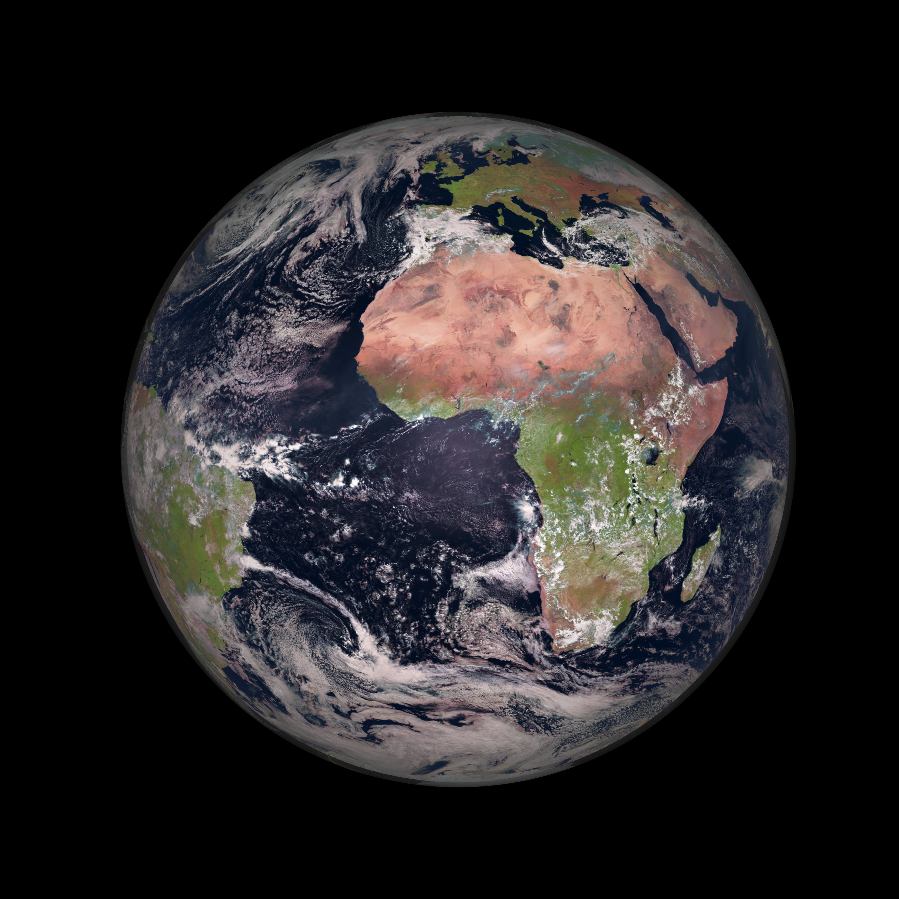
(Mercator projection by Daniel R. Strebe. Earth photo by the European Space Agency)
{kind=link}
Power Laws & Factor Sparsity
Power laws (\(y = ax^{-k}\))
Pareto’s/Zipf’s distributions
~80/20 rule: 80% of the effects come from 20% of the causes.
[…] the distributions of the sizes of cities, earthquakes, forest fires, solar flares, moon craters and people’s personal fortunes all appear to follow power laws (Newman, 2005).
Top U.S. retail companies by market cap as of September 2024
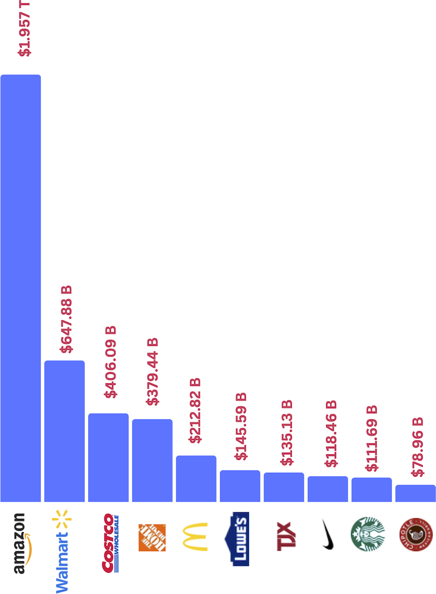
(Artwork by Retail Dogma)
The Modeling Cycle
- Formulate the question
- Assemble hypotheses for essential processes and structures
- Choose scales, entities, state variables, processes, and parameters
- Implement the model
- Analyze, test, and revise the model
- Communicate the model
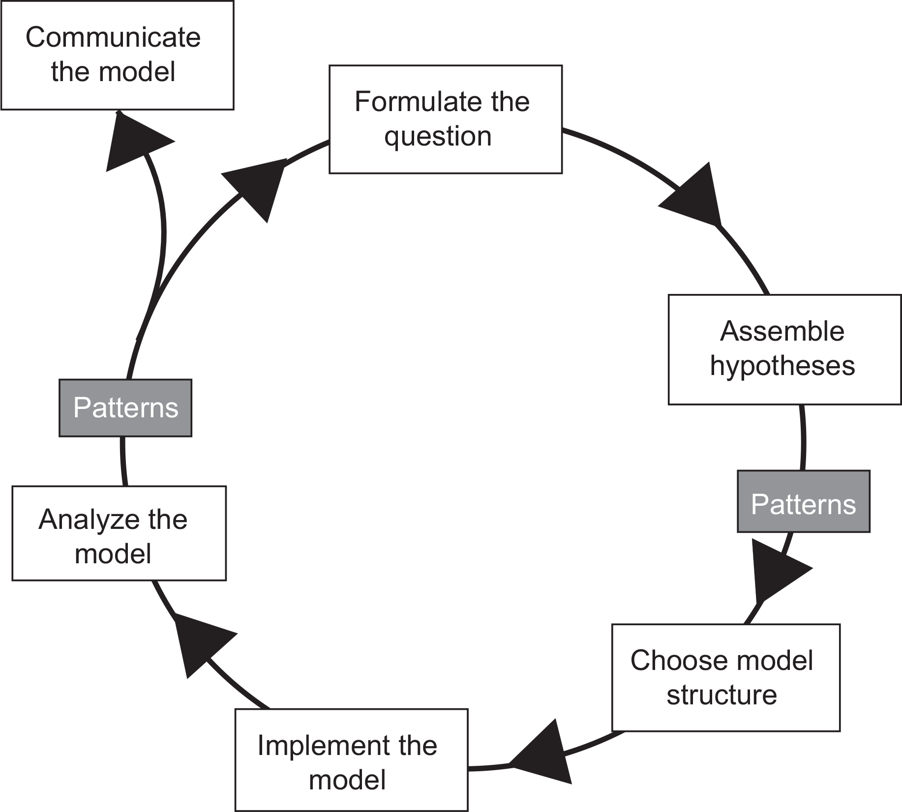
Pattern-Oriented Modeling
Patterns
A pattern is anything beyond random variation.
We can think of patterns as regularities, signals.

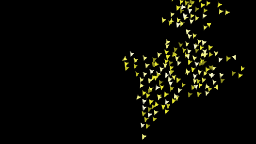
Alignment: A bird tends to turn so that it is moving in the same direction that nearby birds are moving.
Separation: A bird will turn to avoid another bird which gets too close.
Cohesion: A bird will move towards other nearby birds (unless another bird is too close).
(Video by National Geographic. Flocking model by Wilensky (1998), based on Reynolds (1987).)
Pattern-Oriented Modeling
Pattern-Oriented Modeling (POM) is the use of patterns observed in the real system as the additional information we need to make ABMs structurally realistic and, therefore, more general, useful, scientific, and accurate.

(Beech forest model. Reproduced from Grimm et al. (2005, Figure 2), based on Wissel (1992) and Neuert et al. (2001).)
Filters
A filter separates things, such as models that do and do not reproduce the cyclic pattern. The basic idea of POM is to use multiple patterns to design and analyze models.
A small number of weak and qualitative but diverse patterns that characterize a system with respect to the modeling problem can be as powerful a filter as one very strong pattern, and are often easier to obtain.
For most systems, however, one single pattern is not enough to decode the internal organization. Multiple patterns, or filters, are needed.
Nonrealistic Models

ODD Protocol
Overview
- Purpose and Patterns
- Entities, State Variables, and Scales
- Process Overview and Scheduling
Design Concepts
- Basic Principles
- Emergence
- Adaptation
- Objectives
- Learning
- Prediction
- Sensing
- Interaction
- Stochasticity
- Collectives
- Observation
Details
- Initialization
- Input Data
- Submodels
(Based on Railsback & Grimm (2019))
How to Start
Ok, But How?
How do you identify a set of diverse patterns that characterize the system for the problem that you are modeling?
This task, like much of modeling, uses judgment, knowledge of the system, and often, trial and error.
- Start by formulating your model (writing a description of it using the ODD protocol), with the purpose of the model as the only filter for designing the model structure.
- Identify a set of observed patterns that you believe characterize your system relative to the problem you model.
- Define criteria for pattern-matching: How will you decide whether the model does or does not reproduce each pattern?
- Now review your draft model formulation and determine what additional things need to be in the model to make it possible for your characteristic patterns to emerge from it.
Key Questions
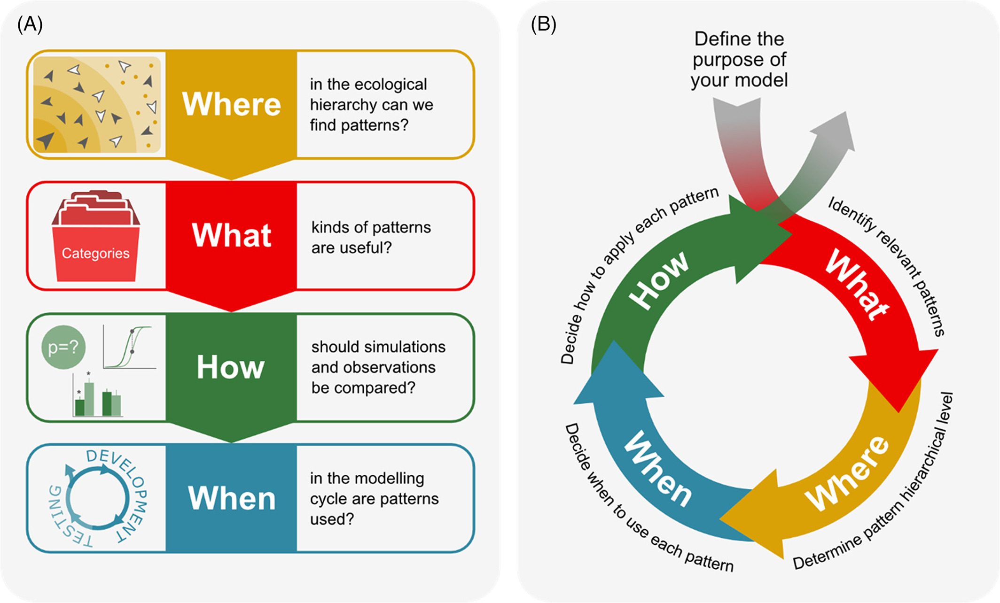Where in the Ecological Hierarchy Can We Find Patterns?
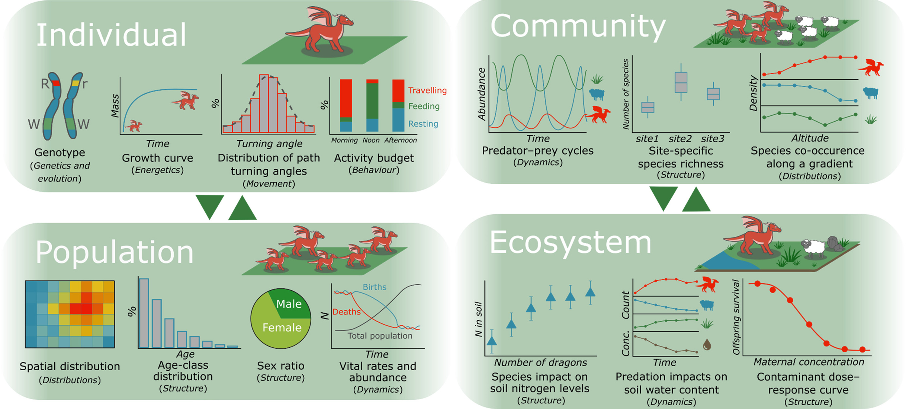How Should Simulations and Observations Be Compared?
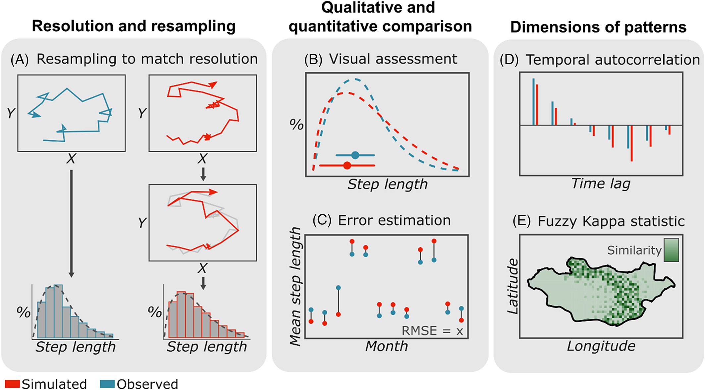The Modeling Cycle
- Formulate the question
- Assemble hypotheses for essential processes and structures
- Choose scales, entities, state variables, processes, and parameters
- Implement the model
- Analyze, test, and revise the model
- Communicate the model
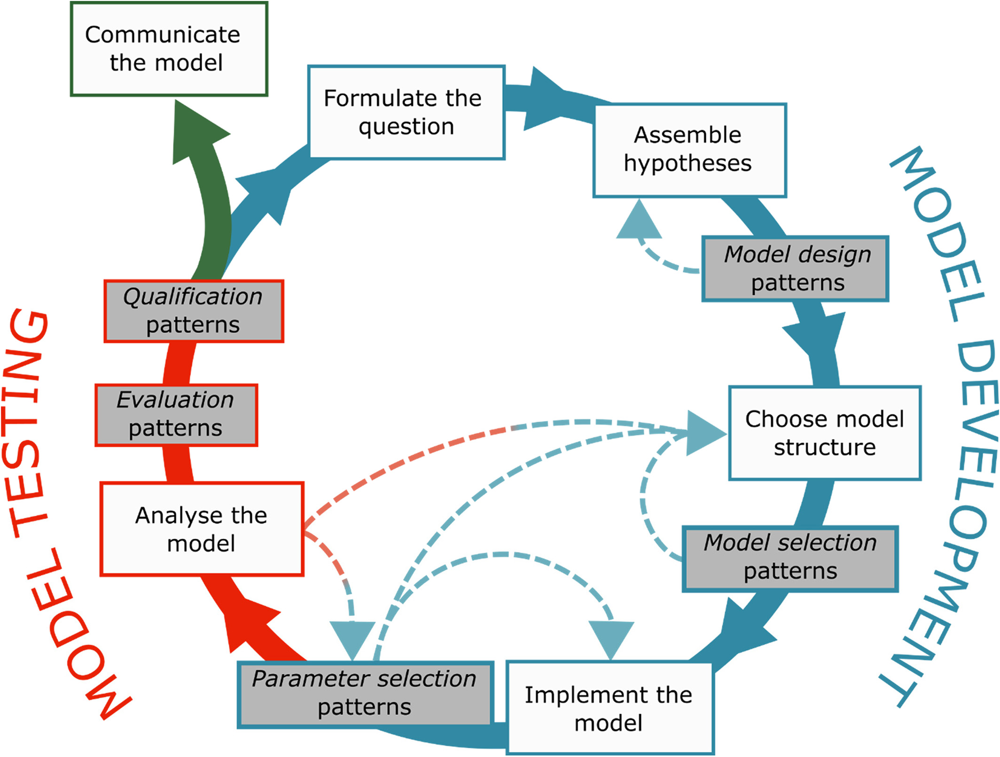
Example
Abstract versus Empirical Models
Abstract models allow for the examination of general principles in detail (Rand & Wilensky, 2007).
Empirical models are generally more oriented towards prediction and often need to address specific questions posed by policy-makers at particular sites (Sun et al., 2016).
Full spectrum modeling combines the benefits of abstract and empirical models (Rand & Wilensky, 2007).
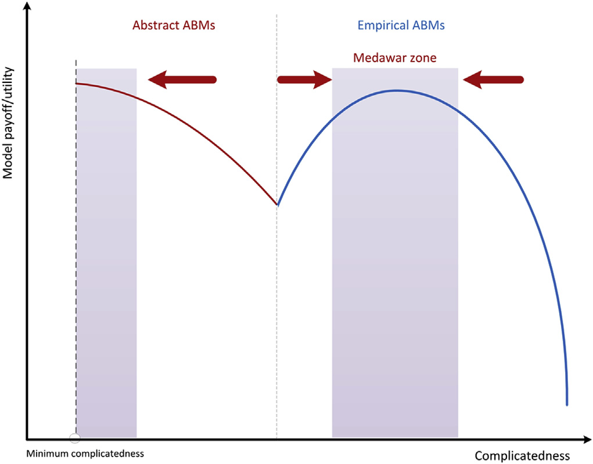
(Artwork by Sun et al. (2016, Figure 3), based on Grimm et al. (2005, Figure 1))
Question
Does climate change impact the health and nutrition of Brazilian children under five years old?
Conceptual Model
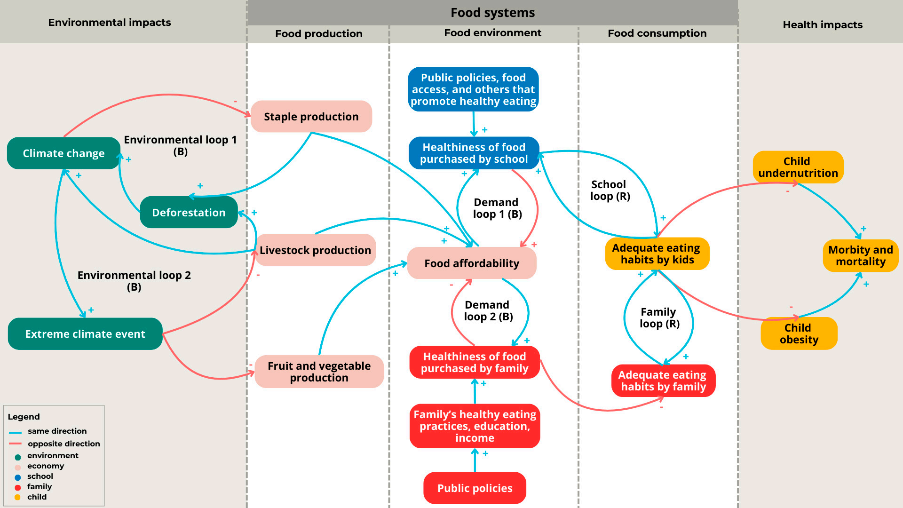
(Reproduced from Carvalho et al. (2024, Figura 2))
Conceptual Model
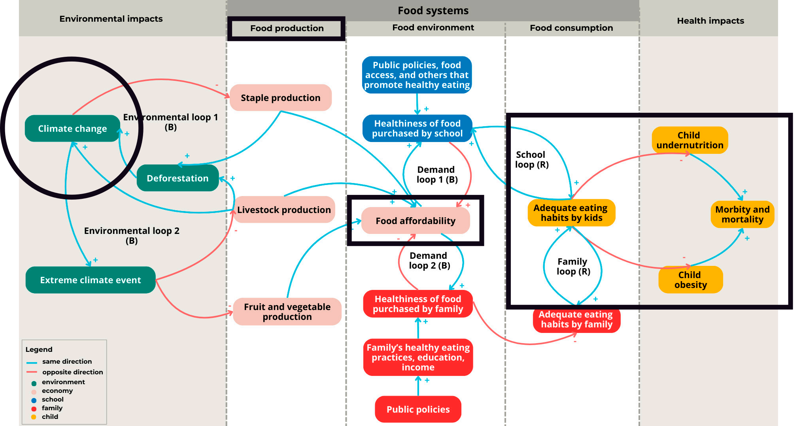
(Adapted from Carvalho et al. (2024, Figura 2))
Patterns
Response in food production to global changes in temperature and precipitation
Response in food accessibility for low-income families to the reduction in food production
Response in healthy food consumption by low-income families to the reduction in food accessibility
Response in health and nutrition of children from low-income families to the reduction in healthy food consumption
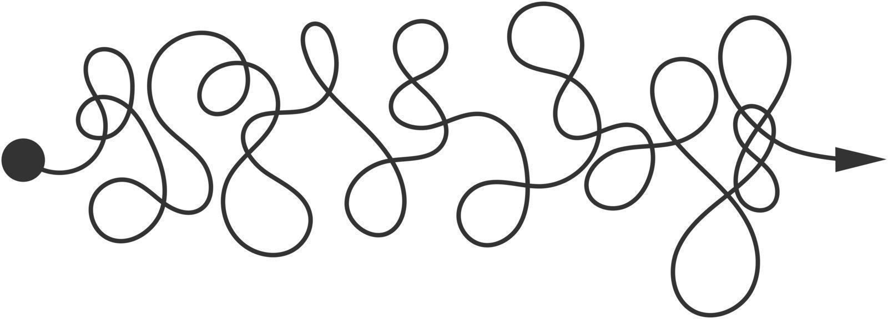
(Artwork by Viktoriia Ablohina)
Agents
👁️⃤
Observer
Grid Cells
⊞
🌡️
🌧️
Food
🍌🍅
🥬🌾
🥛🥩
Families
👨👩👧
👩👩👦
👨👨👧
Children
🧒
👧
LogoClim

FoodClim
🚧 Under development 🚧
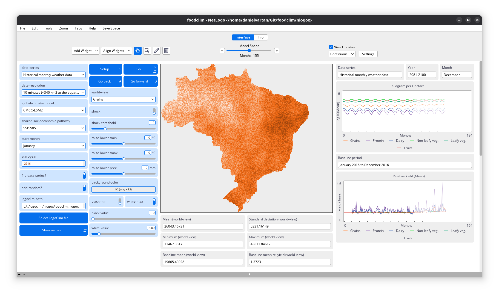GlobalSyndemic
🚧 Under development 🚧
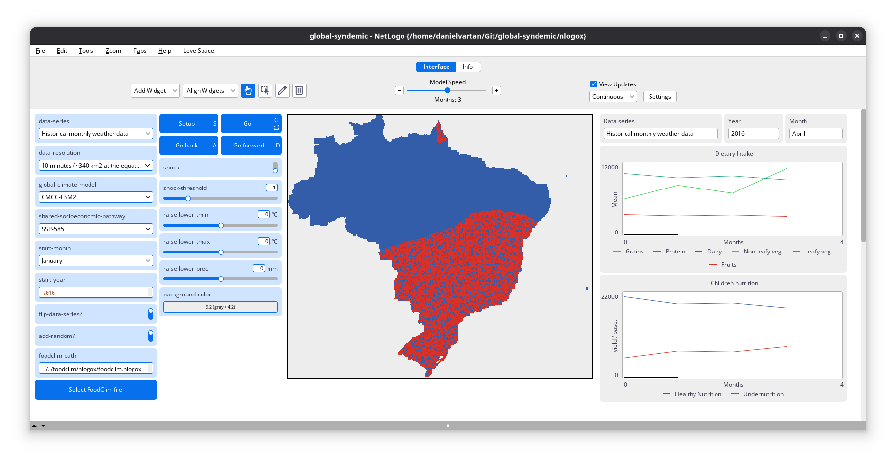Closing Remarks


This presentation was created with the Quarto Publishing System. The code and materials are available on GitHub.
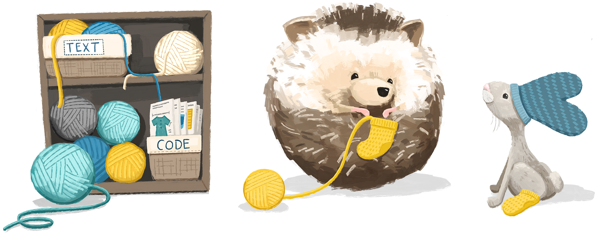
(Artwork by Allison Horst)
References
In accordance with the American Psychological Association (APA) Style, 7th edition.
Thank you!

(Artwork by Allison Horst)
Appendices
Leverage Points
There are places within a complex system where a small shift in one thing can produce big changes in everything (D. Meadows, 1999).
Leverage points are points of power (D. H. Meadows, 2008).
Possible states, even if unlikely: by modelling such interactions, it can suggest that properties exist in the system that had not been noticed in the real world situation (Dodig-Crnkovic & Giovagnoli, 2013).
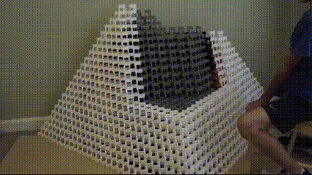